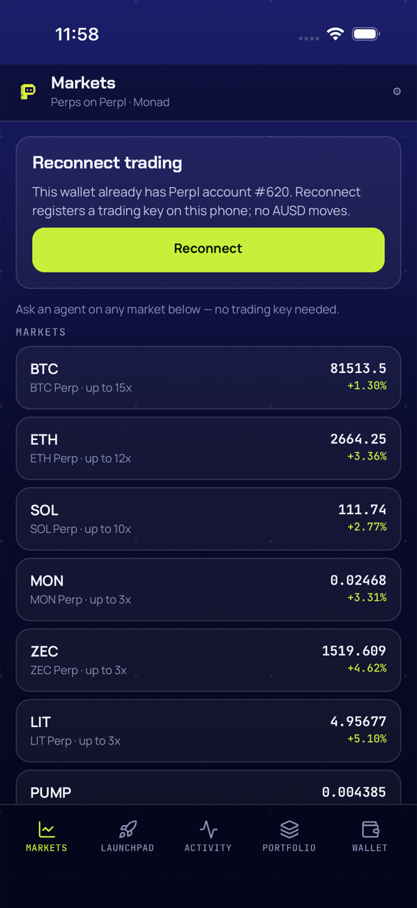

Qué cambió
a58f348—signOutya no llamaclearTradingKey(): la trading key de Perpl sobrevive al sign out (opción B);usePerplla ignora si laaddressguardada no coincide con la de la sesión nueva (same(key.address, address)). El store ganamarketEntryTab(hasKey): decide con qué pill (tradeoask) se abre un mercado desde Markets.8d2b8f6— corrige el comentario designOut: «Reset trading key» no borra la key, la rota (enrola una nueva sobrescribiendo la anterior). Ruling del controlador: nada en la UI llama aclearTradingKey— el chip «Reset trading key» sólo aparece conlive.keyRejectedy su acción real esusePerpl.resetKey, que registra una key nueva en Perpl (no un borrado).f6aa7aa—MarketsListnavega siempre al mercado (antes, sin trading key, la fila quedabareadOnly); el pill de entrada sale demarketEntryTab(hasKey). El gate de Perpl (antes en la raíz de Markets) se mueve aTradeGatedentro de la pestaña Trade, visible sólo cuandoperpl.status !== "ready"; su botón vuelve a Markets (back) sin disparar Reconnect. Ask y Agents dejan de depender de la key de Perpl.
Proyecto completo: overview mobile-ask; plan
docs/superpowers/plans/2026-09-21-markets-ask-gate.md; correcciones (gate)
en los specs de Perpl, hifi y Ask; addendum §8 del audit F1 y nota en §7 del audit F2.
Por qué
Pendiente 3 del audit F2 (§5): sin trading key — tras reinstalar, o con una wallet nueva sin cuenta
Perpl — Markets bloqueaba la fila del mercado con readOnly y la única salida era
«Reconnect trading», una tx on-chain. Como Ask y Agents no necesitan la key de Perpl, eso los dejaba
inaccesibles sin razón. Este fix separa las dos cosas: la lista siempre abre el mercado (Ask sin key,
Trade con key) y el gate de Perpl queda contenido en Trade.
El sign out dejó de borrar la trading key porque cada Reconnect cuesta una tx de gas y registra otra
key en Perpl (límite 423 de keys por cuenta). Con la key sobreviviendo al sign out, sólo
cambia de estado si la wallet activa cambia de dirección; con la misma wallet, el estado vuelve a
ready sin pasar por Reconnect. No hay borrado explícito desde la UI: clearTradingKey
queda exportado en src/storage/perpl.ts sin llamadores. Follow-up post-bounty (fuera de
alcance): derivar la key de una firma determinista de la wallet (patrón dYdX v4), sin nada en disco.
Archivos tocados
- apps/mobile/__tests__/store.test.ts
- apps/mobile/src/hooks/useAccount.ts
- apps/mobile/src/screens/market.tsx
- apps/mobile/src/screens/markets.tsx
- apps/mobile/src/store.ts
git diff --stat 3a0c490..HEAD: 5 archivos, +44 / −9. Sin dependencias nuevas; Ask,
Agents, useReads, usePerpl y services/reads sin cambios.
Validación
npm test → 31 suites / 237 tests en verde; npx tsc --noEmit limpio.
Recorrido en el simulador iPhone 17 Pro 2B2A0BAD-… (2026-09-20 23:57 → 2026-09-21 00:11
CST, HEAD f6aa7aa, sin cambios de código; 20 capturas, todas miradas —
.superpowers/sdd/2026-09-21-markets-ask-gate/task-3-report.md). El simulador arrancó
sin trading key (incidente previo del 2026-09-20: cuenta #620 pidiendo «Reconnect
trading»), así que la rama tomada en cada paso fue:
- Markets con el Gate: card «Reconnect trading» + línea faint «Ask an agent on any market below — no trading key needed.» y la lista de mercados a opacidad plena y tappable.
- Tap en
market-BTCsin key → abre Ask (no Trade): matriz, hoja de celda y pill Agents funcionan sin key. - Pill Trade sin key → TradeGate con el copy exacto («Trading isn't set up on this
phone» / «This wallet already has Perpl account #620…») y botón «Reconnect trading» que, al
tocarlo, vuelve a Markets sin disparar Reconnect (verificado en
src/screens/market.tsx:63:onPress={back}). - Sign out → sign in (passkey «pickler» + Face ID) → misma cuenta restaurada; Ask vuelve a firmar en
silencio con la wallet
unlocked(sinSessionGate). - Saldos iguales antes y después: 29.00 AUSD ·
0xe371…51C1· MON 0.0468 al inicio (23:57) y al cierre (00:07) — sin transacciones en toda la sesión.
No se pudo medir en esta sesión (sin trading key desde el incidente del 2026-09-20):
(a) que el sign out → sign in conserve la key — sin key no hay nada que conservar; la garantía
queda cubierta por lectura de código (useAccount.signOut, src/hooks/useAccount.ts:49,
ya no llama clearTradingKey; usePerpl ignora una key de otra address vía
same(key.address, address), src/hooks/usePerpl.ts:103) — pendiente de
verificación empírica con un Reconnect real o en el iPhone; (b) Trade en estado ready (sin
ticket con card, con la key activa). Tampoco se tocó «Reset trading key»: según el ruling del
controlador (8d2b8f6), enrola una key nueva en Perpl (riesgo del límite 423)
y el chip sólo existe con keyRejected — el estado «sin key» ya estaba dado sin necesidad
de forzarlo.
Defectos de la app encontrados en el recorrido: ninguno.

TradeGate, botón vuelve a Markets.Revisión independiente de la rama: pendiente (la corre el controlador tras este tracker, no este ejecutor); se anota aquí el veredicto y, si aplica, el fix resultante.
Follow-ups conocidos
- Conservar la trading key al sign out sin haberlo visto empíricamente en esta sesión (sin key desde el incidente del 2026-09-20): confirmar con un Reconnect real o en el iPhone de Jesús.
- Un Reconnect real (reinstalación) sigue reenviando
enableForwardingporque no hay getter on-chain para saber si ya está activo. - Follow-up post-bounty: key de Perpl derivada de una firma determinista de la wallet (patrón dYdX v4), sin nada en disco — evita el límite de 423 keys por Reconnect.
- Capability Push Notifications en el App ID
fun.pickler.app(F4), rotación deSUPABASE_ACCESS_TOKEN/CRON_SECRETy revocar keys huérfanas entestnet.perpl.xyz/apikeyssiguen abiertos (sin relación con este fix).